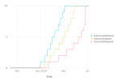

Garlic.jl is a reimplementation of garlic model using Cropbox framework. The original model was written in C++ and published in "A process-based model for leaf development and growth in hardneck garlic (Allium sativum)".
using Pkg
Pkg.add("Garlic")
using Cropbox
using Garlic
The model is a system named Model defined in Garlic module.
parameters(Garlic.Model; alias = true, recursive = true)
Config for 21 systems:
| Clock
|
| init | = | 0 hr |
| step | = | 1 hr |
| BetaFunction
|
| maximum_temperature | = | nothing |
| minimum_temperature | = | 0 °C |
| optimal_temperature | = | nothing |
| beta | = | 1 |
| GrowingDegree
|
| base_temperature | = | nothing |
| maximum_temperature | = | nothing |
| optimal_temperature | = | nothing |
| Q10Function
|
| Q10 | = | 2 |
| optimal_temperature | = | nothing |
| Phenology
|
| optimal_temperature | = | 22.28 °C |
| ceiling_temperature | = | 34.23 °C |
| planting_date | = | nothing |
| emergence_date | = | nothing |
| maximum_emergence_rate | = | 0.0876 d⁻¹ |
| emergence_optimal_temperature | = | 12.7 °C |
| emergence_ceiling_temperature | = | 35.9 °C |
| critical_photoperiod | = | 12.5 hr |
| storage_days | = | 100 d |
| storage_temperature | = | 5 °C |
| initial_leaves_at_harvest | = | 4 |
| maximum_leaf_initiation_rate | = | 0.2 d⁻¹ |
| maximum_phyllochron_asymptote | = | 0.4421 d⁻¹ |
| __LeafAppearance__SDm | = | 117.752 d |
| __LeafAppearance__k | = | 0.0256 d⁻¹ |
| initial_maximum_phyllochron | = | missing |
| leaves_generic | = | 10 |
| scape_removal_date | = | nothing |
| flower_appearance_threshold | = | 5.0 |
| scape_appearance_threshold | = | 3.0 |
| bulbil_appearance_threshold | = | 5.5 |
| Location
|
| latitude | = | 36° |
| longitude | = | 128° |
| altitude | = | 20 m |
| Sun
|
| transmissivity | = | 0.5 |
| solar_constant | = | 1370 W m⁻² |
| photosynthetic_active_radiation_conversion_factor | = | 4.6 μmol J⁻¹ |
| Calendar
|
| init | = | nothing |
| last | = | nothing |
| VaporPressure
|
| a | = | 0.611 kPa |
| b | = | 17.502 |
| c | = | 240.97 |
| Weather
|
| store | = | nothing |
| CO2 | = | 400 μmol mol⁻¹ |
| Leaf
|
| maximum_elongation_rate | = | 12 cm d⁻¹ |
| longevity | = | 50 d |
| cold_injury_factor1 | = | -0.1 K⁻¹ |
| cold_injury_factor2 | = | 1.6 |
| cold_injury_critical_temperature | = | 0 °C |
| __LeafColdInjury__enable | = | true |
| minimum_length_of_longest_leaf | = | 60 cm |
| length_to_width_ratio | = | 0.05 |
| area_ratio | = | 0.75 |
| stay_green | = | 3.5 |
| maximum_length_of_longest_leaf_adjustment | = | 0 cm² |
| Sheath
|
| growth_duration | = | 10 d |
| longevity | = | 50 d |
| NodalUnit
|
| growth_duration | = | 10 d |
| longevity | = | 50 d |
| RespirationTracker
|
| Q10 | = | 2 |
| optimal_temperature | = | 20 °C |
| Radiation
|
| leaf_angle | = | ellipsoidal |
| leaf_angle_factor | = | 0.7 |
| wave_band | = | photosynthetically_active_radiation |
| scattering | = | 0.15 |
| clumping | = | 1.0 |
| soil_reflectivity | = | 0.1 |
| GasExchange
|
| leaf_width | = | 0.1 m |
| stomatal_ratio | = | 1.0 |
| kinematic_viscosity_of_air_at_20 | = | 1.51e-5 m² s⁻¹ |
| thermal_diffusivity_of_air_at_20 | = | 2.15e-5 m² s⁻¹ |
| g0 | = | 0.096 mol bar⁻¹ m⁻² s⁻¹ |
| g1 | = | 6.824 |
| diffusivity_ratio_boundary_layer | = | 1.37 |
| diffusivity_ratio_air | = | 1.6 |
| leaf_scattering | = | 0.15 |
| leaf_spectral_correction | = | 0.15 |
| leaf_thermal_emissivity | = | 0.97 |
| latent_heat_of_vaporization_at_25 | = | 44 kJ mol⁻¹ |
| specific_heat_of_air | = | 29.3 J K⁻¹ mol⁻¹ |
| absorption_coefficient | = | 0.5 |
| base_temperature | = | 25 °C |
| rubisco_constant_for_co2_at_25 | = | 404.9 μbar |
| activation_energy_for_co2 | = | 79.43 kJ mol⁻¹ |
| rubisco_constant_for_o2_at_25 | = | 278.4 mbar |
| activation_energy_for_o2 | = | 36.38 kJ mol⁻¹ |
| mesophyll_o2_partial_pressure | = | 210 mbar |
| maximum_carboxylation_rate_at_25 | = | 108.4 μmol m⁻² s⁻¹ |
| activation_energy_for_carboxylation | = | 52.1573 kJ mol⁻¹ |
| maximum_electron_transport_rate_at_25 | = | 169.0 μmol m⁻² s⁻¹ |
| activation_energy_for_electron_transport | = | 23.9976 kJ mol⁻¹ |
| electron_transport_temperature_response | = | 616.4 J K⁻¹ mol⁻¹ |
| electron_transport_curvature | = | 200 kJ mol⁻¹ |
| light_transition_sharpness | = | 0.7 |
| triose_phosphate_limitation_at_25 | = | 16.03 μmol m⁻² s⁻¹ |
| activation_energy_for_Tp | = | 47.1 kJ mol⁻¹ |
| dark_respiration_at_25 | = | 1.08 μmol m⁻² s⁻¹ |
| activation_energy_for_respiration | = | 49.39 kJ mol⁻¹ |
| co2_compensation_point_at_25 | = | 42.75 μbar |
| activation_energy_for_co2_compensation_point | = | 37.83 kJ mol⁻¹ |
| Root
|
| growth_duration | = | 10 d |
| longevity | = | 50 d |
| Model
|
| primordia | = | 5 |
| partitioning_table | = | [0.0 0.0 … 0.0 0.0; 0.35 0.3 … 0.0 0.1; … ; 0.05 0.0 … 0.0 0.95; 0.0 0.0 … 0.0 0.0] |
| initial_seed_mass | = | 0.275 g |
| initial_planting_density | = | 55 m⁻² |
| maintenance_respiration_coefficient | = | 0.012 d⁻¹ |
| synthesis_efficiency | = | 0.8 |
| cold_damage_shape_factor | = | 0.9 K⁻¹ |
| cold_damage_critical_temperature | = | -15 °C |
| enable_cold_damage | = | true |
| leaf_width | = | 1.5 cm |
As the parameter list goes quite long, let's try a parameter set included in the package. It was calibrated for Korean Mountain (KM) cultivar planted and grown in Seattle as described in the paper.
config = @config Garlic.Examples.AoB.KM_2014_P2_SR0
Config for 8 systems:
| Phenology
|
| optimal_temperature | = | 22.28 |
| ceiling_temperature | = | 34.23 |
| critical_photoperiod | = | 12 |
| maximum_leaf_initiation_rate | = | 0.1003 |
| storage_temperature | = | 5 |
| maximum_phyllochron_asymptote | = | 0.4421 |
| leaves_generic | = | 10 |
| initial_leaves_at_harvest | = | 4 |
| storage_days | = | 143 |
| planting_date | = | ZonedDateTime(2014, 11, 20, tz"America/Los_Angeles") |
| emergence_date | = | ZonedDateTime(2014, 12, 30, tz"America/Los_Angeles") |
| scape_removal_date | = | nothing |
| Leaf
|
| maximum_elongation_rate | = | 4.7 |
| minimum_length_of_longest_leaf | = | 65.0 |
| stay_green | = | 1.84 |
| Carbon
|
| maintenance_respiration_coefficient | = | 0.012 |
| synthesis_efficiency | = | 0.8 |
| partitioning_table | = | [0.0 0.0 … 0.0 0.0; 0.35 0.3 … 0.0 0.1; … ; 0.05 0.0 … 0.0 0.95; 0.0 0.0 … 0.0 0.0] |
| Meta
|
| cultivar | = | :KM |
| year | = | 2014 |
| planting_group | = | 2 |
| Location
|
| latitude | = | 47.66 |
| longitude | = | 122.29 |
| altitude | = | 20.0 |
| Weather
|
| CO2 | = | 390 |
| store | = | 7454×11 DataFrame… |
| Plant
|
| initial_planting_density | = | 55 |
| Calendar
|
| init | = | ZonedDateTime(2014, 9, 1, 1, tz"America/Los_Angeles") |
| last | = | ZonedDateTime(2015, 7, 7, tz"America/Los_Angeles") |
Simulation is run until stop condition is met which corresponds to the number of hours (calendar.count) between starting (calendar.init) and ending date (calendar.last) as specified in the configuration above. The output of simulation is snap-ped each day, not by every hour, to reduce overhead.
r = simulate(Garlic.Model; config, stop = "calendar.count", snap = 1u"d")
Progress: 6%[=> ] ETA: 0:00:17 ( 2.37 ms/it)
Progress: 56%[===============> ] ETA: 0:00:06 ( 1.73 ms/it)
Progress: 68%[==================> ] ETA: 0:00:04 ( 1.67 ms/it)
Progress: 78%[=====================> ] ETA: 0:00:03 ( 1.64 ms/it)
Progress: 87%[=======================> ] ETA: 0:00:02 ( 1.62 ms/it)
Progress: 97%[==========================>] ETA: 0:00:00 ( 1.60 ms/it)
Progress: 100%[===========================] Time: 0:00:11 ( 1.59 ms/it)
The output data frame can be now used for making some plots. Here is a plot replicating Fig. 3.D from the paper showing leaf development over time.
visualize(r, :time, [:leaves_appeared, :leaves_mature, :leaves_dropped]; kind = :line)
Another plot replicating Fig. 4.D from the paper showing the area of green leaf taking account of leaf aging.
visualize(r, :time, :green_leaf_area; kind = :line)
Similarly, dry biomass of organ types per plant can be visualized.
visualize(r, :time, [:leaf_mass, :bulb_mass, :total_mass]; kind = :line)
For more information about using the framework such as simulate() and visualize() functions, please refer to the Cropbox documentation.
{kind=link}
{kind=link}